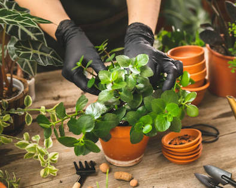

Kies welk stekje je wilt ruilen!


-

Stek 4:(naam stek)
-
Stek 5:(naam stek)
-

Stek 6:(naam stek)
Kom een kijkje nemen bij onze stekjebieb van buurtcampus Oost.
Ruil of doneer hier je stekje! Voorkom verspilling en
doe mee met de samenbrengen van een mooie gezonde duurzame wijk.